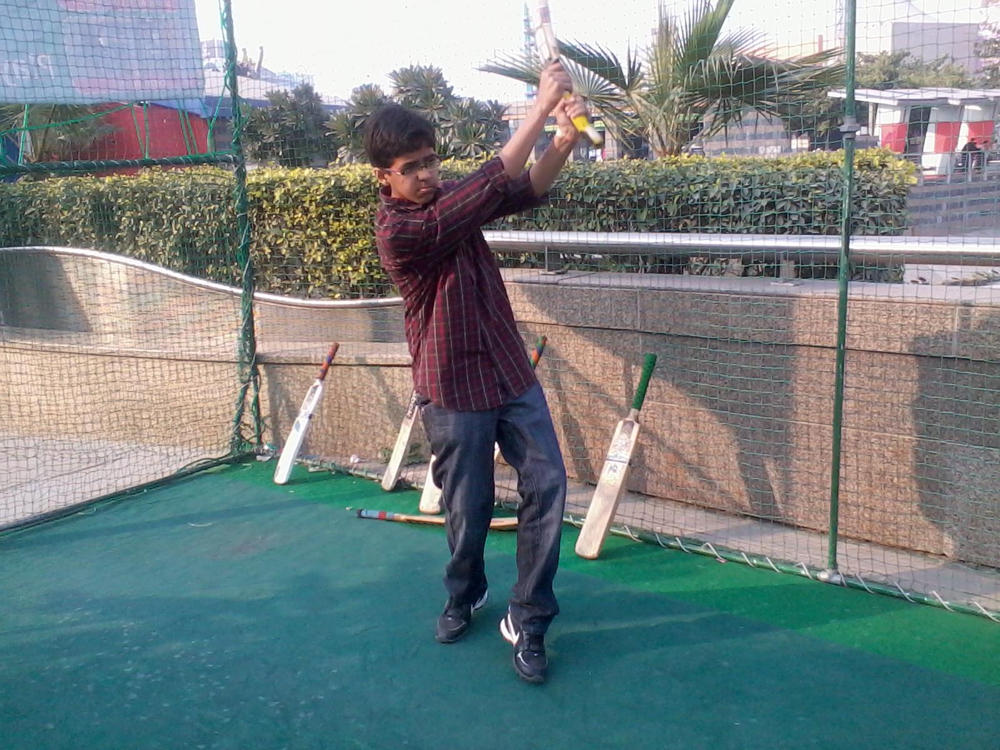
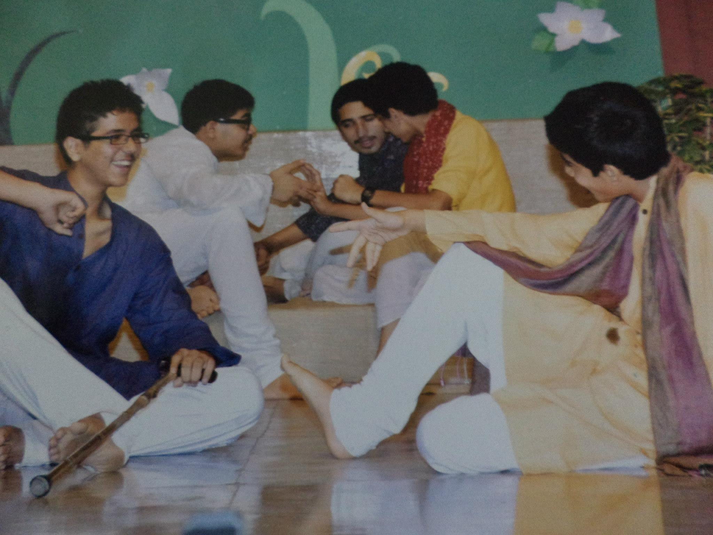
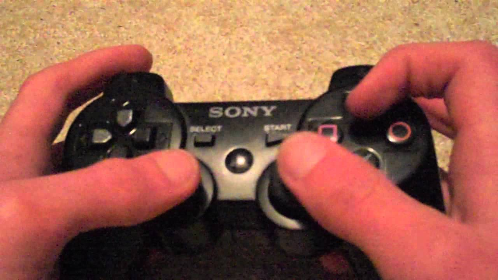
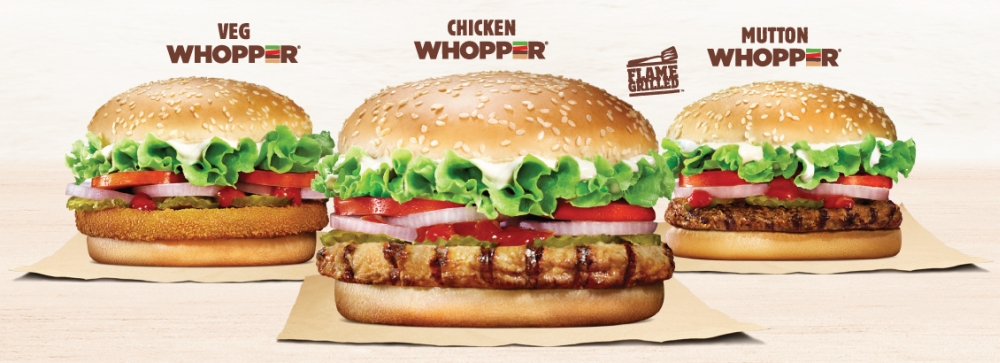

My Interests
Some of my favourite pass times and hobbies are as follows:
CRICKET
A sport I love watching and playing. Although I love to play other sports too like table tennis, football and badminton , I have a special connection with cricket. Ever since I was a child I would play cricket even if you wake me up at 3 in the morning. I acquired coaching for cricket too. I have represented my club team and my school team too. I can be a mad fan and sit in front of a TV screen for the whole day watching cricket. I have participated in many cricket quizzes and contests too. All in all, cricket is something I will love always.

Casual Net Practice
THEATRE
I discovered my passion for thatre and acting when I was in 6th grade. I entered my name for an interschool play and unexpectedly the teacher selected me and gave me a key role. The play was a huge success and we were invited to perform at the Kamani auditorium. From there I was unstoppable, I would participate in all plays and slowly started directing plays. I even organised a few theatre workshops for the junior classes. To continue my theatre, I am currently there in my college's theatre group- Machaan. I will do my best to nurture this passion of mine.

Dashrath Manjhi- The Play
GAMING
Another important passion of mine is gaming. I play a lot of video games on my PC and PS3. My favourite being Fifa 16 and The Last Of Us. I love COD and GTA too! There was a time when I could not keep my hands off the gaming consoles and had to be pulled away from them. Later, I realised that these consoles could be time-killing to. Yet, I still follow this interest of mine keenly and plan to do so once I am up with my exams.

Driving @ GTA 5
FOOD
The love of my life. Thats all i got to say. Some people eat to live but I live to eat. Though this does not mean I like all food! Hehe! Thats true for most of us.. Isn't it? From Burger King to Dominoes to Khan Chacha in Khan Market, you can take me to any of these places and I would be thankful to you FOREVER! My alltime favourites are Rajma Chawal and Butter Chicken. Being a foodie is certainly my favourite trait that I have inherited from my previous generations. So... Oh wait! I will be back after a bite!

A Glimpse Of Heaven
Programming
This passion of mine was kind of late to come up. Nevertheless, Once this passion kicked in, it was difficult to keep me away from the PC. Although I am not the best coder you may come across but I like to spend time developing logics and programmes. As of now, I can code in two languages: C++ and Python, though there are plenty of more to come. :)

Where We All Started
TV Shows And Movies
Although I never had much time for this given my other passions, once I was over with my CBSE boards and entrances, all I did was watch shows and movies. Some of my favourite TV shows are: Friends, Sherlock, Big Bang Theory, Breaking Bad and the ultimate show- Sarabhai vs Sarabhai (I so wish they start it again). I love watching movies too and the favourites are: Batman Trilogy, Iron Man, Schindler's list and Frequency.
Where We All Started